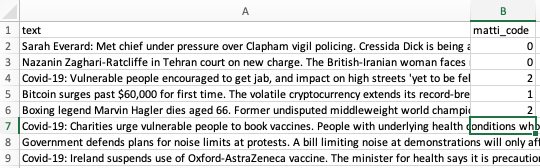
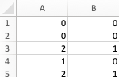

Spreadsheet software for closed coding
It is possible to conduct content coding using spreadsheet software, such as Microsoft Excel or Google Sheets.
Developing the code book
Codebook defines which categories (or: codes) are used to classify the data. It provides a description of the category, usually a short name of the name (the code) for the category -- and for spreadsheet based work in the next step, an unique number for the each category. For example, a code book might look like:
| Number | Code | Definition |
|---|---|---|
| 1 | Happy | Expression of joy, fun or pleasant experiences. |
| 2 | Sad | Feelings of despair, grief, disappointment, and, sorrow. |
| 0 | Neutral | Not expressing happy nor sad. |
These codes can be produced either by taking a theory-based classification directly (like above) or by conducting first an inductively coding a small portion of the data to define the code book.
Coding data on speadsheet
Store the data to be classified onto the rows of the spreadsheet software. The categorisation is entered on news columns of the software. Each coder should have their own column for entering the numbers for each code.

Calculating intercoder reliability
Critical step in closed coding is to conduct re-coding of the data. A second researcher users the codebook and apply the codes on data without seeing the codes given by the second researcher. This is to ensure that the second researcher is not influced by the codes given by the first researcher. (Therefore, remember to hide these from the spreadsheet software.)
The process of re-coding ends in calculating intercoder reliability. Use software such as ReCal2 to calculate the intercoder reliability score for the coded data. Remember to code the data per requirements of the software, for ReCal2 remove all headers and the column containing data so that only codes (as numbers) for all coders remain on the spreadsheet.
